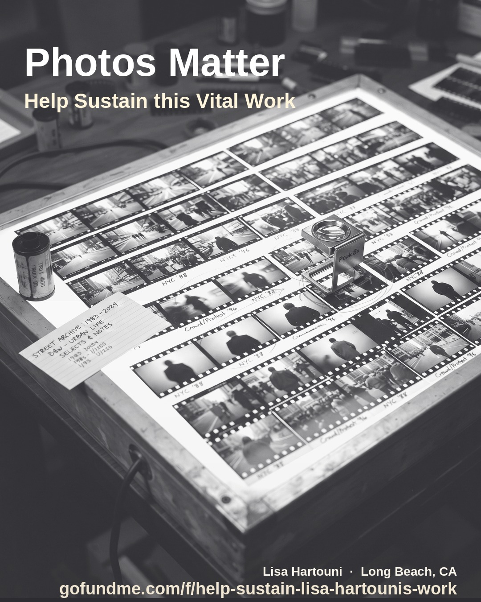
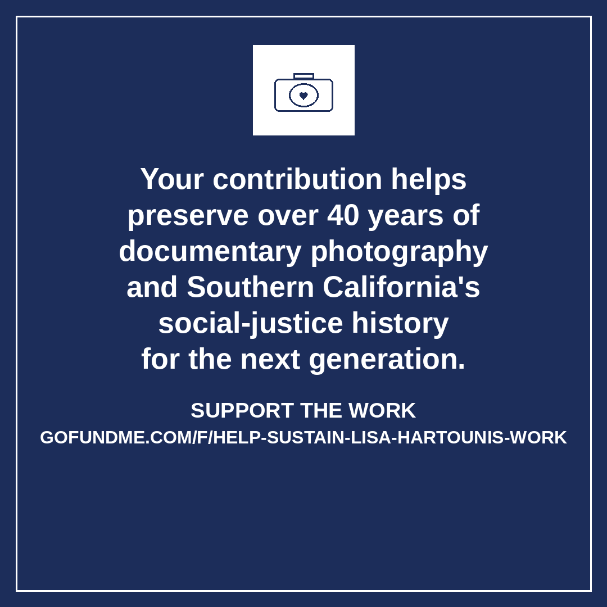

Lisa Hartouni · Long Beach, CA
Lisa Hartouni has spent 40 years documenting communities, civil rights history, and the stories that deserve to last. Help her keep going — share any of these graphics on social media or send them directly to someone who should know her work.
Support on GoFundMeHow to use: Download any graphic below and post it to Instagram, Facebook, or share directly. Copy the blurb underneath and paste it as your caption. Every share helps.

"Photos matter. Help sustain Lisa Hartouni's 40-year archive of community documentary work — currently rebuilding after a cyberattack."

"Your contribution helps preserve over 40 years of documentary photography and Southern California's social-justice history — for the next generation."
Lisa Hartouni · Documentary Photographer · Long Beach, CA
lisahartouni.com ·
GoFundMe Campaign